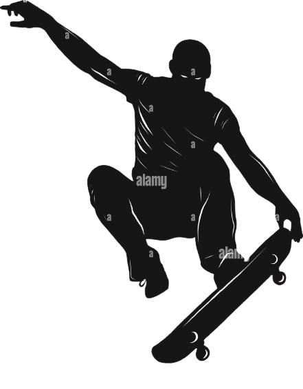

SKATEBOARDING
 Hello, My name is Luis Daniel,
I like skateboarding, Phonk or music like Electro,
when i am practicing skateboarding that music
is the best for me, but, what is your favorite sport?
and if there is some difference between do
sport without music and with your favorite music.
Dogtown and Z-Boys
"Dogtown and Z-Boys" is an incredibly captivating
documentary that chronicles the story of the Z-Boys
skate team from Venice Beach during the 1970s.
Through interviews with team members and
an abundance of skateboarding footage, the film
succeeds in conveying the free-spirited and
creative essence of these young individuals
who revolutionized skateboarding. The music complements
the narration perfectly, creating a cinematic experience
that leaves you feeling inspired. Ultimately,
it is a film that any skateboarding and urban culture
enthusiast should definitely watch.
Hello, My name is Jordy,
I like skateboarding too, Punk, Tecnho and Trash music.
when i am working on my self, thats the music
that actually inspired me to keep on working
on what i wanna be, what i wanna do or where i wanna
go, just keep on the way, keeping the vibes.
What music inspired your life to keep in?
Mid90s
"Mid90s" is a nostalgic film that perfectly
captures the skateboarding culture of
the 90s. The movie follows a 13-year-old
boy named Stevie as he navigates
through life in a challenging family
environment and finds solace in skateboarding
with an older group of peers.
The film represents youth, friendship, and the search for
identity.